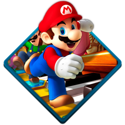

Super Mario is a platform game series created by Nintendo starring their mascot, Mario. It is the central series of the greater Mario franchise. At least one Super Mario game has been released for every major Nintendo video game console.
Mario & Luigi is a series of role-playing video games developed by AlphaDream and published by Nintendo for the latter's various video game handheld consoles.The series is a spin-off from Nintendo's trademark Super Mario series and stars the titular characters Mario and Luigi.

© 2024 Super Mario Bros